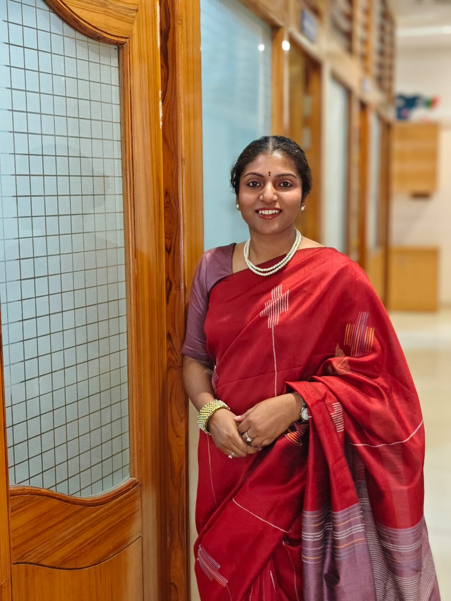
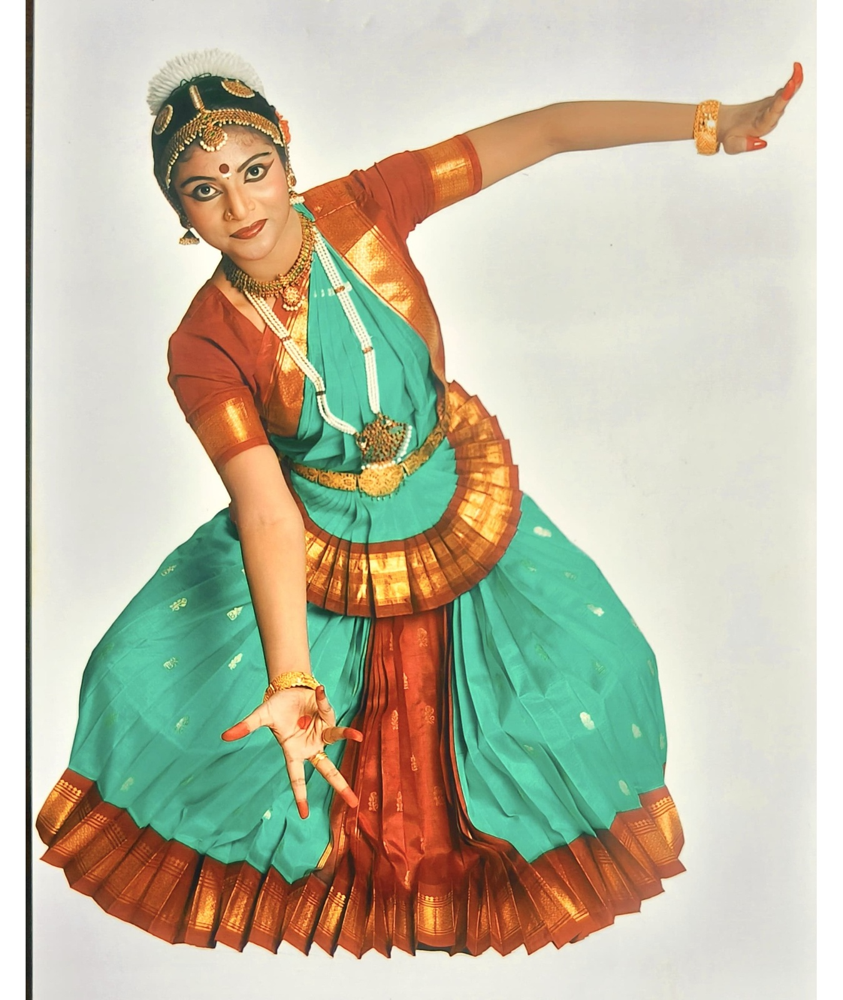
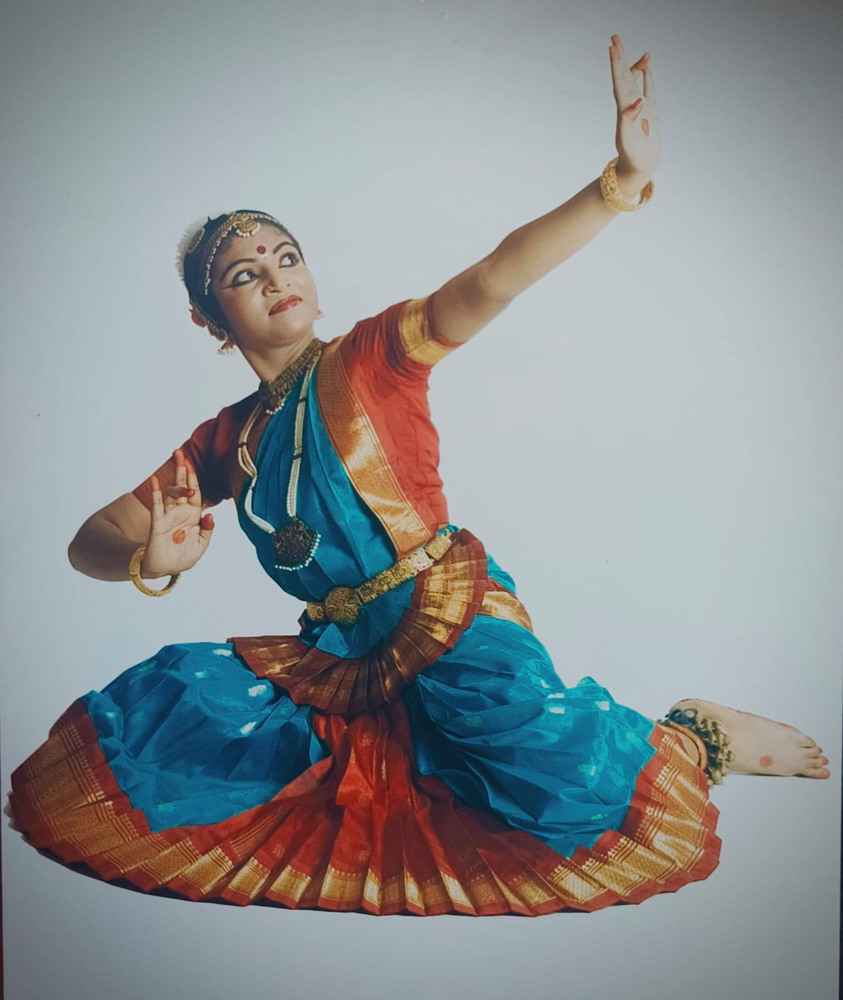
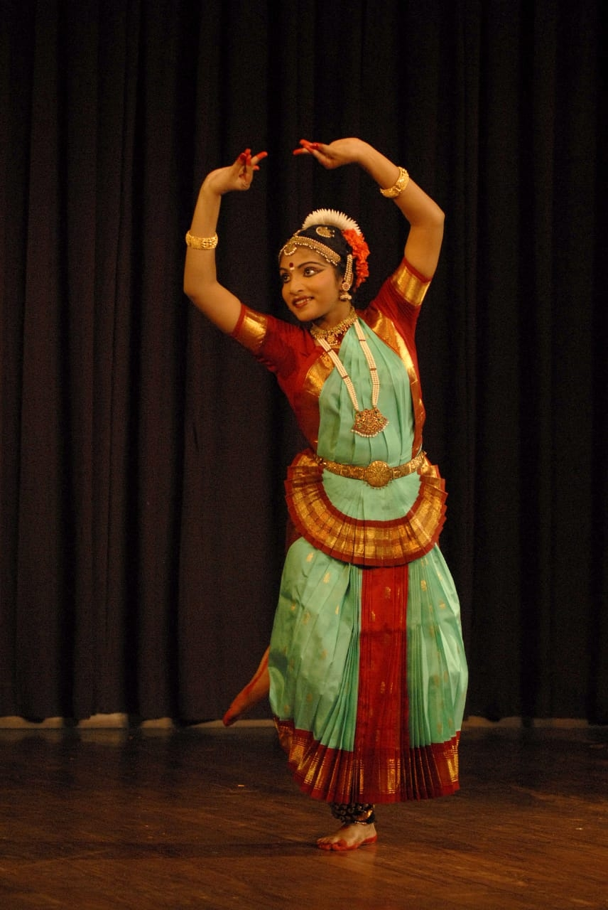
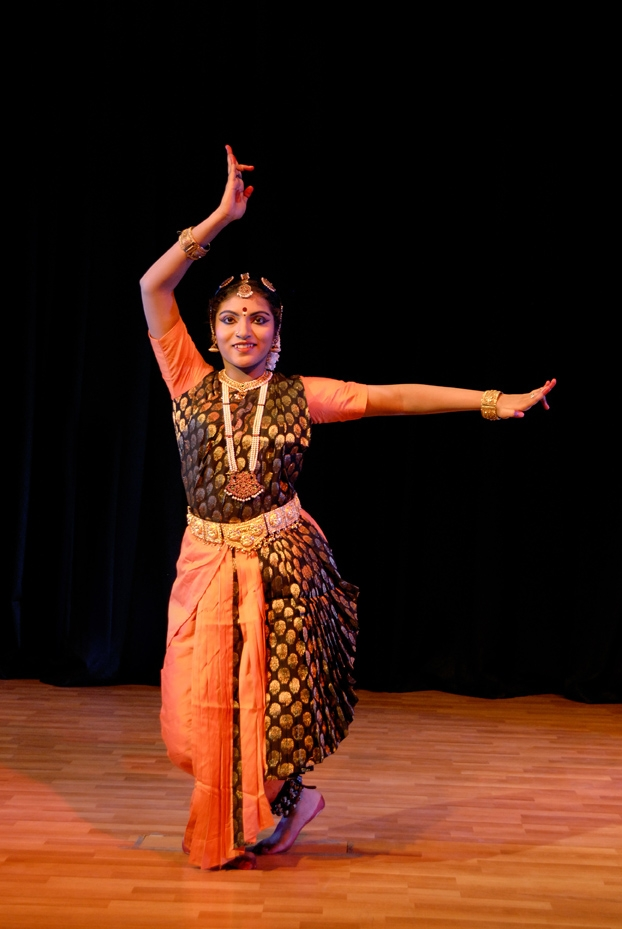

<style>
@media (max-width: 768px) {
  .featured-event-grid {
    grid-template-columns: 1fr !important;
    text-align: center;
    gap: 1.5rem !important;
  }
  .featured-event-grid > div:first-child {
    display: flex;
    justify-content: center;
  }
  #health-benefits .container > div > div {
    grid-template-columns: 1fr !important;
    gap: 1.25rem !important;
  }
}
</style>

<header class="hero" id="main" role="banner" aria-label="Site hero" style="margin-top:0;">
  <div class="hero__media" style="background-image:url('assets/images/main1.jpg');"></div>
  <div class="hero__overlay"></div>
  <div class="hero__content container">
    <h1 class="hero__title">Dance of the Divine</h1>
    <p class="hero__byline">by Dr Shrija Srinivasan</p>
    <p class="hero__subtitle">Performer   • Speaker   • Researcher   • Voice Artist</p>
    <a class="hero__scroll" href="#about" aria-label="Scroll to About section"></a>
  </div>
  <nav class="hero__nav" aria-label="Primary">
    <a href="#about">About</a>
    <a href="#services">Services</a>
    <a href="portfolio/">Portfolio</a>
    <a href="connect/">Connect</a>
    <a href="sponsor/">Sponsor</a>
    <a href="#articles">Articles</a>
    <a href="research/">Research</a>
  </nav>
</header>

<section id="featured-event" class="section" style="padding: 3rem 0; background: linear-gradient(180deg, rgba(0,0,0,0.95) 0%, rgba(26,26,26,0.98) 100%);">
  <div class="container">
    <div style="padding: 2rem; background: linear-gradient(135deg, rgba(200,169,81,0.1) 0%, rgba(26,26,26,0.95) 100%); border: 2px solid rgba(200,169,81,0.3); border-radius: 16px; box-shadow: 0 8px 32px rgba(0,0,0,0.4), 0 0 0 1px rgba(200,169,81,0.1) inset; position: relative; overflow: hidden;">
      <div style="position: absolute; top: -50%; right: -50%; width: 200%; height: 200%; background: radial-gradient(circle, rgba(200,169,81,0.05) 0%, transparent 70%); pointer-events: none;"></div>
      <div style="display: grid; grid-template-columns: auto 1fr; gap: 2rem; align-items: center; position: relative; z-index: 1;" class="featured-event-grid">
        <div style="flex-shrink: 0;">
          <div style="width: 120px; height: 120px; border-radius: 12px; overflow: hidden; border: 3px solid #C8A951; box-shadow: 0 4px 15px rgba(200,169,81,0.4);">
            
          </div>
        </div>
        <div style="flex: 1;">
          <div style="display: inline-block; background: #C8A951; color: #000; padding: 0.3rem 0.8rem; border-radius: 20px; font-size: 0.75rem; font-weight: 700; letter-spacing: 0.5px; margin-bottom: 0.75rem; text-transform: uppercase;">Latest Performance</div>
          <h2 style="color: #C8A951; margin: 0 0 0.5rem 0; font-size: clamp(1.5rem, 3vw, 2rem); font-family: 'Playfair Display', serif; font-style: italic; font-weight: 600;">
            <a href="{{ '/portfolio/domestic-performance/' | relative_url }}" style="color: #C8A951; text-decoration: none; transition: color 0.3s ease;" onmouseover="this.style.color='#E2C36A';" onmouseout="this.style.color='#C8A951';">Bharatanatyam Performance</a>
          </h2>
          <p style="color: #e0e0e0; margin: 0 0 0.75rem 0; font-size: 1rem; line-height: 1.5;">
            <strong style="color: #C8A951;">Dedicated to Chottanikkara Bhagavathy</strong><br>
            <span style="color: #b5b5b5; font-size: 0.95rem;">Saturday, January 03, 2026 • Temple Auditorium, Chottanikkara, Kochi, Kerala</span>
          </p>
          <div style="display: flex; gap: 1rem; flex-wrap: wrap; align-items: center;">
            <a href="{{ '/portfolio/domestic-performance/' | relative_url }}" style="background: linear-gradient(135deg, #C8A951, #B8941F); color: white; border: 2px solid #C8A951; padding: 0.6rem 1.5rem; border-radius: 8px; text-decoration: none; display: inline-flex; align-items: center; gap: 0.5rem; font-weight: 600; font-size: 0.95rem; transition: all 0.3s ease; box-shadow: 0 4px 12px rgba(200, 169, 81, 0.3);" onmouseover="this.style.background='linear-gradient(135deg, #B8941F, #A8821A)'; this.style.borderColor='#B8941F'; this.style.transform='translateY(-2px)'; this.style.boxShadow='0 6px 18px rgba(200, 169, 81, 0.5)';" onmouseout="this.style.background='linear-gradient(135deg, #C8A951, #B8941F)'; this.style.borderColor='#C8A951'; this.style.transform='translateY(0)'; this.style.boxShadow='0 4px 12px rgba(200, 169, 81, 0.3)';">📸 View Event Photos & Details →</a>
            <a href="{{ '/portfolio/' | relative_url }}" style="color: #C8A951; text-decoration: none; font-size: 0.9rem; font-weight: 500; transition: color 0.3s ease;" onmouseover="this.style.color='#E2C36A';" onmouseout="this.style.color='#C8A951';">View Portfolio →</a>
          </div>
        </div>
      </div>
    </div>
  </div>
</section>

<section id="about" class="section">
  <div class="container">
    <h2>About Me</h2>
    <div class="split">
      <div class="split__media">
        
      </div>
      <div class="split__content">
        <p>
          Hi! I am Shrija. I am a researcher, educator and artist, with a specialisation in spatio-cultural studies and performance arts. I like to learn about ecology and landscapes and how cultural systems are built around them and societies are shaped. In brief, I study, Human-Nature-Culture interface. My focus is on conservation and awareness and bridging the gap between society and ecology through art. To pursue my interests, I did my PhD in Humanities and Social Sciences after completing my Bachelors and Master’s degree in Literature and Culture Studies.
        </p>
        <p>
          I started learning Bharatanatyam when I was four years old under the Guru Shishya Parampara. The dance form intrigued me because of its complexity, logic and beauty. In a highly competitive and challenging world, Bharatanatyam has helped me stay grounded, develop a positive mindset, and be empathetic.
        </p>
        <p>
          I enjoy connecting with people and sharing ideas or working collaboratively. I am enthusiastic about conducting workshops, lectures and events, to build strong relationships and communities.Today, I teach university students and working professionals as a faculty, and independently work on my creative projects. I share my experiences on social media through audio-visual content and occasionally through a haiku!
        </p>
      </div>
    </div>
  </div>
  
</section>

<section id="health-benefits" class="section" style="padding: 2.5rem 0; background: linear-gradient(180deg, rgba(0,0,0,0.98) 0%, rgba(26,26,26,0.95) 100%);">
  <div class="container">
    <div style="padding: 1.5rem; background: linear-gradient(135deg, rgba(200,169,81,0.08) 0%, rgba(26,26,26,0.95) 100%); border: 2px solid rgba(200,169,81,0.25); border-radius: 12px; box-shadow: 0 4px 20px rgba(0,0,0,0.3), 0 0 0 1px rgba(200,169,81,0.1) inset;">
      <div style="display: grid; grid-template-columns: repeat(auto-fit, minmax(200px, 1fr)); gap: 1.5rem; align-items: start;">
        <div style="text-align: center;">
          <div style="font-size: 2.5rem; margin-bottom: 0.5rem;">🧘</div>
          <h3 style="color: #C8A951; margin: 0 0 0.5rem 0; font-size: 1.1rem; font-weight: 600;">Yoga in Motion</h3>
          <p style="margin: 0; color: #e0e0e0; font-size: 0.9rem; line-height: 1.5;">
            Bharatanatyam combines <strong style="color: #C8A951;">cardio, flexibility, strength training, and balancing</strong> in one holistic practice
          </p>
        </div>
        <div style="text-align: center;">
          <div style="font-size: 2.5rem; margin-bottom: 0.5rem;">💪</div>
          <h3 style="color: #C8A951; margin: 0 0 0.5rem 0; font-size: 1.1rem; font-weight: 600;">Physical Wellness</h3>
          <p style="margin: 0; color: #e0e0e0; font-size: 0.9rem; line-height: 1.5;">
            Strengthens <strong style="color: #C8A951;">eye muscles</strong>, improves <strong style="color: #C8A951;">posture</strong>, and releases stiffness from sedentary lifestyles
          </p>
        </div>
        <div style="text-align: center;">
          <div style="font-size: 2.5rem; margin-bottom: 0.5rem;">🧠</div>
          <h3 style="color: #C8A951; margin: 0 0 0.5rem 0; font-size: 1.1rem; font-weight: 600;">Mental Clarity</h3>
          <p style="margin: 0; color: #e0e0e0; font-size: 0.9rem; line-height: 1.5;">
            Cultivates <strong style="color: #C8A951;">deep focus</strong> and <strong style="color: #C8A951;">meditative awareness</strong>, bringing balance to thoughts and actions
          </p>
        </div>
        <div style="text-align: center;">
          <div style="font-size: 2.5rem; margin-bottom: 0.5rem;">✨</div>
          <h3 style="color: #C8A951; margin: 0 0 0.5rem 0; font-size: 1.1rem; font-weight: 600;">Holistic Wellbeing</h3>
          <p style="margin: 0; color: #e0e0e0; font-size: 0.9rem; line-height: 1.5;">
            Enhances <strong style="color: #C8A951;">spatial awareness</strong>, <strong style="color: #C8A951;">emotional regulation</strong>, and <strong style="color: #C8A951;">self-expression</strong>
          </p>
        </div>
      </div>
      <div style="text-align: center; margin-top: 1.5rem; padding-top: 1.5rem; border-top: 1px solid rgba(200,169,81,0.2);">
        <p style="margin: 0 0 0.75rem 0; color: #e0e0e0; font-size: 0.95rem; font-style: italic;">
          "Bharatanatyam is yoga in motion—a holistic exercise that nurtures body, mind, and spirit"
        </p>
        <a href="{{ '/articles/article-5/' | relative_url }}" style="color: #C8A951; text-decoration: none; font-weight: 600; font-size: 0.9rem; transition: color 0.3s ease;" onmouseover="this.style.color='#E2C36A';" onmouseout="this.style.color='#C8A951';">Learn more about health benefits →</a>
      </div>
    </div>
  </div>
</section>

<section id="services" class="section">
  <div class="container">
    <h2>Services</h2>
    <div class="cards">
      <article id="performance-arts" class="card">
        <div class="card__thumb">
          
        </div>
        <h3><a href="services/performance-arts/">Performance Arts</a></h3>
        <p>Stage performances, site-specific works, and collaborative creations.</p>
        <p><a href="services/performance-arts/" class="muted">View details →</a></p>
      </article>
      <article id="talks-workshops" class="card">
        <div class="card__thumb">
          
        </div>
        <h3><a href="services/talks-workshops/">Talks & Workshops</a></h3>
        <p>Talks and participatory workshops for institutions, festivals, and communities.</p>
        <p><a href="services/talks-workshops/" class="muted">View details →</a></p>
      </article>
      <article id="research-consultation" class="card">
        <div class="card__thumb">
          
        </div>
        <h3><a href="services/research-consultation/">Research Consultation</a></h3>
        <p>Advisory on arts research, documentation, and methodologies.</p>
        <p><a href="services/research-consultation/" class="muted">View details →</a></p>
      </article>
      <article id="voice-art" class="card">
        <div class="card__thumb">
          
        </div>
        <h3><a href="services/voice-art/">Voice Art</a></h3>
        <p>Voice acting, storytelling, and experimental vocal performances.</p>
        <p><a href="services/voice-art/" class="muted">View details →</a></p>
      </article>
    </div>
  </div>
</section>

<section id="articles" class="section">
  <div class="container">
    <h2>Articles</h2>
    <ul class="posts">
      <li>
        <article>
          <h3><a href="articles/article-1/">Petals of a Flower: Knowing Indian Dance Forms</a></h3>
          <p class="muted">Explore the rich tapestry of Indian dance forms, from classical Bharatanatyam to diverse folk traditions.</p>
        </article>
      </li>
      <li>
        <article>
          <h3><a href="articles/article-2/">One Step at a Time</a></h3>
          <p class="muted">Explore the different styles of Bharatanatyam, the challenges faced by the art form, and the universal symbolism of the Nataraja.</p>
        </article>
      </li>
      <li>
        <article>
          <h3><a href="articles/article-3/">Moving Sculptures</a></h3>
          <p class="muted">Explore the structured world of classical dance forms, their ancient origins, and the art of communication through gestures.</p>
        </article>
      </li>
      <li>
        <article>
          <h3><a href="articles/article-4/">In the Kalakshetra Tradition</a></h3>
          <p class="muted">Discover the legacy of Rukmini Devi Arundale and the establishment of Kalakshetra, which revolutionized Bharatanatyam and challenged colonial stigmas.</p>
        </article>
      </li>
      <li>
        <article>
          <h3><a href="articles/article-5/">Bharatanatyam: Body, Mind & Spirit</a></h3>
          <p class="muted">Explore how Bharatanatyam serves as yoga in motion, offering holistic benefits for physical health, mental wellbeing, and spiritual growth.</p>
        </article>
      </li>
      <li>
        <article>
          <h3><a href="articles/article-6/">A Dedicated Page: Shiva as Nataraja</a></h3>
          <p class="muted">Delve into the profound symbolism of the Nataraja, understanding how each element represents philosophical concepts of creation, destruction, and liberation.</p>
        </article>
      </li>
    </ul>
    <p><a href="articles/" class="muted">View all articles →</a></p>
  </div>
</section>


